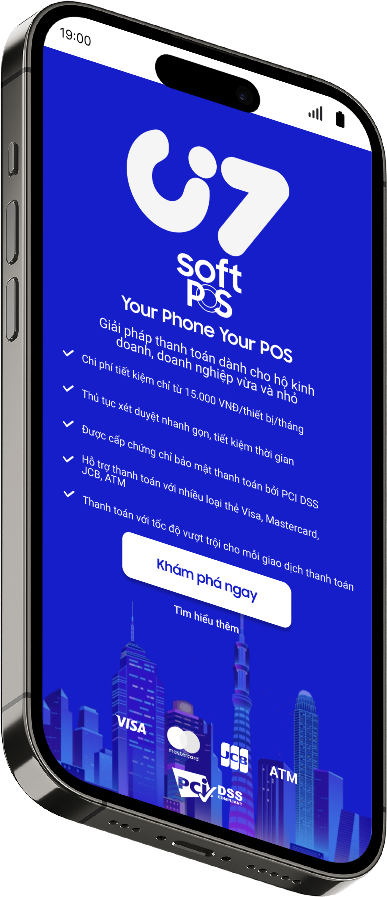

Overview

POS (Point-of-Sale)
” A POS or Point-of-Sale is a device that is used for transactions by retail customers.
A cash register is a type of POS. The cash register has largely been replaced by
electronic POS terminals that can be used to process credit cards and debit cards
as well as cash. “
” The term contactless payment refers to a secure method for consumers to purchase
products or services using a debit, credit, smartcard, or another payment device by
using radio frequency identification (RFID) technology and near-field communication (NFC). “
RFID and NFC?
” Radio Frequency Identification (RFID) is a technology that uses radio waves
to passively identify a tagged object. It is used in several commercial and industrial applications,
from tracking items along a supply chain to keeping track of items checked out of a library. “